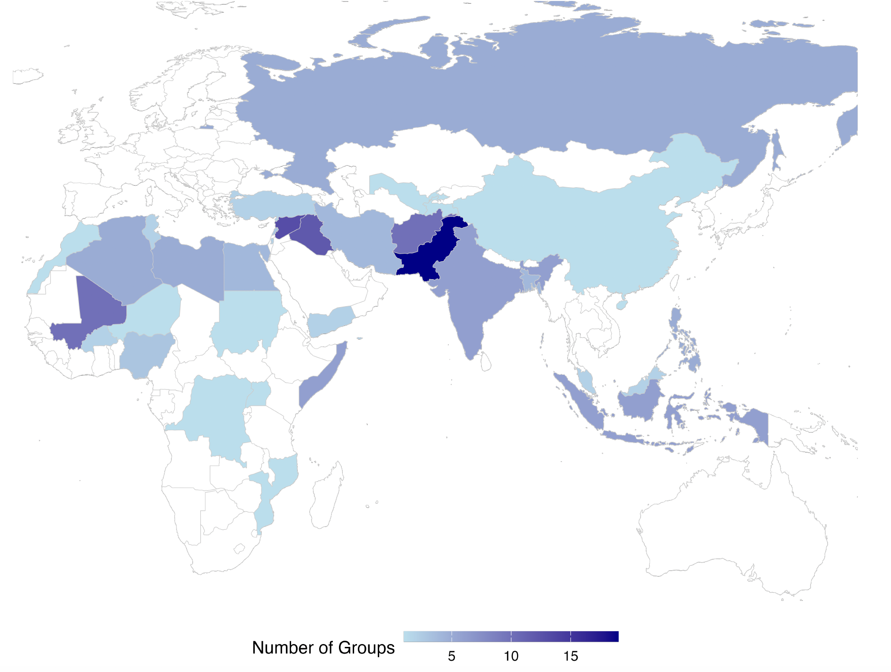

The Jihadist Leaders Dataset (JLD) provides original data on the biographical attributes of 238 leaders from 110 jihadist groups. We conceptualize jihadist groups as an ideological subset of armed groups—non-state actors that use violence to achieve political objectives. This allows us to explore variation among a broad range of leaders of jihadist groups operating across Africa, Asia, and the Middle East between 1976 and 2023. Drawing on Arabic, English, French, German, Turkish, and Urdu sources, the JLD contains information on 31 leader-level variables, providing new insights into how militant leaders’ backgrounds and prior experiences shape their decision-making.
Jihadist Leaders Dataset (JLD)

Please cite as: Amjad, Maria, Mark Berlin, Sara Daub, Ilayda B. Onder, and Joshua Fawcett Weiner. 2026. “Commanders of the Mujahideen: Introducing the Jihadist Leaders Dataset.” Journal of Peace Research.